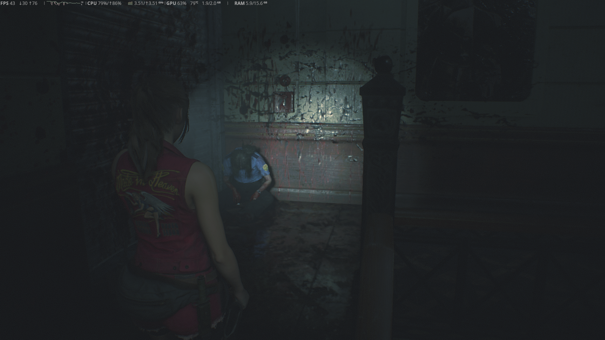

Titulo de mi post
Descripciion de mi post

Texto del articulo que hay en el post. quesillo
Soy un parrafo dentro de un div
Descripciion de mi post
Texto del articulo que hay en el post. quesillo
Descripciion de mi post 2

Trato de mejorar mi pc de 2015, ahora la GPU se calienta pero mañana le traeré una pasta termica que en teoría es bastante bueno. Creo que es lo unico que debo arreglar, lo demas corre como debe. las vrm pueden estar más frías pero ya están bien. puedo jugar varios juegos de su epoca en alto/muy alto con buen rendimiento. Como dije, el grán límite que tengo ahora son las temperaturas que me parecen altas y no me dejan jugar por horas sin estar preocupado. No creo que me haga falta comprar una GPU más potente. estoy a nada de ver la potencia pura de mi PC, mañana lo veremos.
Descripciion de mi post 3
Texto del articulo que hay en el post. Quesazo